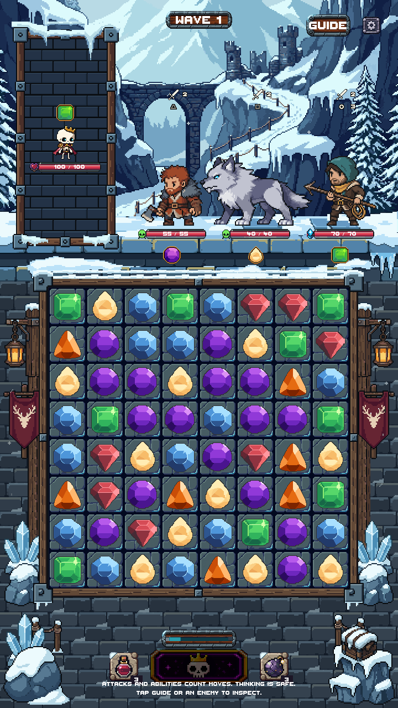
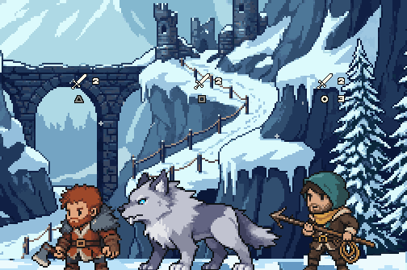
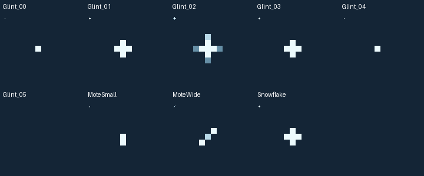

Snowy Mountain · Stage 8 atmosphere
Sparse drifting snow and occasional glints on existing ice. Approved Stage 7 art and all shared layout remain unchanged. Review candidate; not production-integrated or merged.
Actual Unity captures. The preview freezes combat to isolate the atmosphere. One PixelLab generation used; 4,888 remain. No new framing or decoration added.
Unity motion preview · 12-second loop
Playing
Before · accepted Stage 7
Stage 8 · atmosphere

Top background detail

Small native flecks drift at different phases. Source pixels remain hard; only the opacity at each path endpoint fades. Ice glints last less than a second, followed by long rests.
All five viewport checks
The existing small-screen crowding/camera warning and tall-safe-area backing are visible in both versions. Those baseline layout issues are unchanged. Editor evidence only; no phone test.
Native source effects
Raw PixelLab motif sheet at 1× and 8×, then the cleaned native effects. Gray backdrop removed in LibreSprite; motifs reduced by explicit pixel selection, never resized.
Final 8×8 canvases shown at 1× and 10×. Glint_05 is the intentional empty rest frame.

Verification
Unity compilation and all five viewport checks passed. All 96 motion frames preserve the playable board/frame, portrait, controls, health bars and center lower HUD exactly. Reduced Motion is pixel-identical to the approved static scene. All 9,325 protected files are unchanged.
Asset manifest · Pixel checks · Unity test result · Generation ledger · Handoff notes
Stopped after Stage 8 for visual review. Stage 9 has not started. Draft PR #218 remains unmerged.